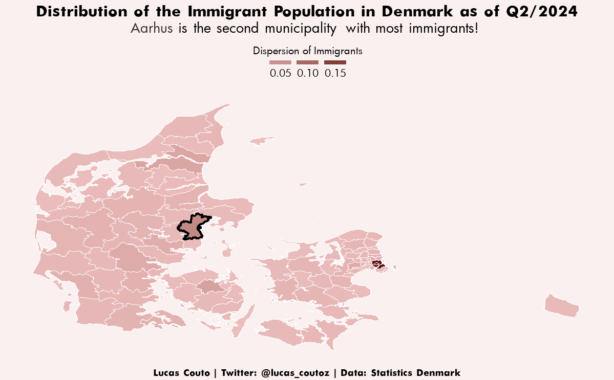
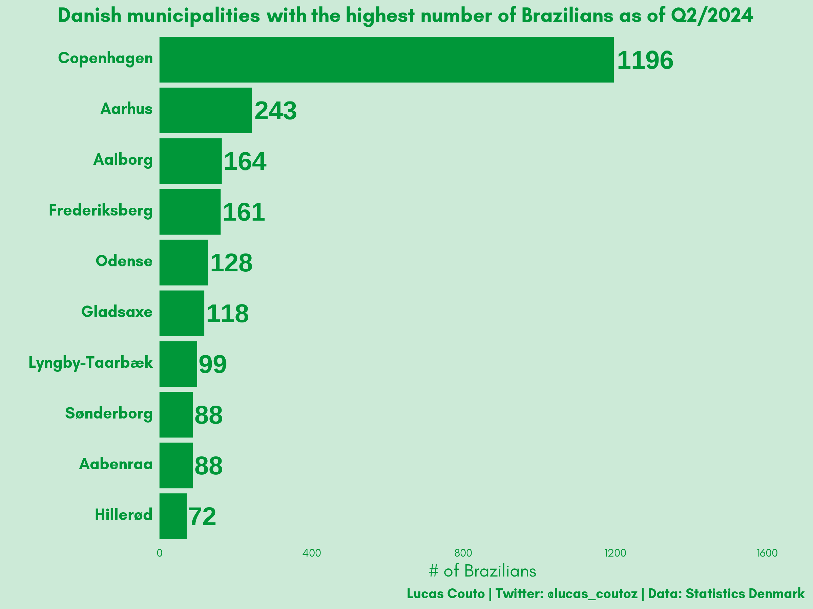

In September, I will begin as a PhD Student at the Department of Political Science at Aarhus University!
Author
Lucas Couto
Published
August 30, 2024
Personal News
Hej!
In this month’s visualisations, I’ve chosen a highly personal theme: I’m thrilled to announce that I will begin as a PhD Student at the Department of Political Science at Aarhus University in September. I’ll slightly change my focus from Comparative Politics to Comparative Political Behaviour. Needless to say, I am very excited about what lies ahead!!!
To get off to a quick start, I’ve made two plots about immigration in Denmark. The first centres on the distribution of the immigrant population across Denmark’s municipalities, and the second centres on which municipalities have the highest # of Brazilians.
Warning
Note that I focus on raw numbers and not on numbers per capita. As such, obviously, populous municipalities tend to have a higher number of immigrants and higher numbers of Brazilians!
Visualisations

Immigrants Across Denmark
In the above map, we can see that a sizable share of immigrants is concentrated in København. Roughly 20% of immigrants are there. Aarhus comes second with 6%, followed by Odense with ~3%, and Aalborg with ~2.7%

Brazilians in Denmark
Not surprisingly, this order almost repeats when we look exclusively at the dispersion of Brazilian immigrants. The difference is that Odense falls to the 5th place, while Aalborg comes in 3rd and Frederiksberg in 4th.
Vi ses!
Code
Show the code
##before you proceed, you should download the data from https://www.dst.dk/en/Statistik/emner/borgere/befolkning/befolkningstal#Load packageslibrary(ggtext)library(mapDK)library(ragg)library(readxl)library(showtext)library(sf)library(tidyverse)#Data Wranglingimmigration <-read_xlsx("20248323147475147100FOLK1B.xlsx") %>% janitor::clean_names() %>%select(x3, x4, x5) %>%filter(x5 !="2024Q2") %>%fill(x3, .direction ="down") %>%mutate(x5 =as.numeric(x5)) %>%filter(x4 !="Total") %>%filter(x4 !="Denmark") %>%mutate(total =sum(x5)) %>%group_by(x3) %>%mutate(per_mun =sum(x5),per_per = per_mun/total) %>%ungroup() %>%select(-x4, -x5) %>%unique() %>%arrange(desc(per_per)) %>%mutate(id =tolower(x3),id =str_replace_all(id, "ø", "oe"),id =str_replace_all(id, "-", " "),id =str_replace_all(id, "æ", "ae"),id =str_replace_all(id, "å", "aa")) %>%mutate(id =ifelse(id =="copenhagen", "koebenhavn", id))subset_im <- immigration %>%select(id, per_per)mapdk <-mapDK()$data %>%left_join(subset_im, by ="id")mapdk1 <- mapdk %>%select(id) %>%unique()mapdk_sf <-st_as_sf(mapdk, coords =c("long", "lat"), crs =4326)#Fontfont_add(family ="regular", "Futura Book.ttf")font_add(family ="bold", "Futura Bold.ttf")showtext_auto() #plotdk <-mapDK(values ="per_per", id ="id", data = mapdk) +scale_fill_gradient(low ="#ecbebe", high ="#5f1313",name ="Dispersion of Immigrants",guide =guide_legend(title.position ="top",nrow =1,keyheight =unit(3, units ="mm"),keywidth =unit(12, units ="mm"),label.position ="bottom")) +geom_polygon(data = mapdk, aes(x = long, y = lat, group = group, fill = per_per), color ="white") +geom_polygon(data = mapdk %>%filter(id =="aarhus"), aes(x = long, y = lat, group = group), fill =NA, color ="black", linewidth =1.5) +coord_sf(expand = T) +labs(title ="Distribution of the Immigrant Population in Denmark as of Q2/2024",subtitle ="<span style='color:#3e3131'>**Aarhus**</span> is the second municipality with most immigrants!",caption ="Lucas Couto | Twitter: @lucas_coutoz | Data: Statistics Denmark") +theme(##Title, Subtitle, Captionplot.title =element_text(family ="bold", hjust =0.5, vjust =0.5, size =25, color ="black"),plot.title.position ="plot",plot.subtitle =element_markdown(family ="regular", hjust =0.5, vjust =0.5, size =20, color ="black"),plot.caption =element_text(family ="bold", size =15, color ="black", hjust =0.5, vjust =0.5),plot.caption.position ="plot",##Backgroundpanel.border =element_blank(),panel.grid.major =element_blank(),panel.grid.minor =element_blank(),plot.background =element_rect(fill ="#faf0f0", linetype ='blank'),#plot.margin = margin( , 0.5, , , "cm"),panel.background =element_rect(fill ="#faf0f0"),##Axesaxis.text =element_blank(),axis.ticks =element_blank(),##Legendlegend.title =element_text(family ="regular", size =15, hjust =0.5, vjust =0.5),legend.position ="top",legend.background =element_rect(fill ="#faf0f0"),legend.text =element_text(family ="regular", size =15),legend.key =element_rect(fill ="#faf0f0"))#size: 12x8#Data Wrangling IIbra <-read_xlsx("20248323147475147100FOLK1B.xlsx") %>% janitor::clean_names() %>%select(x3, x4, x5) %>%filter(x5 !="2024Q2") %>%fill(x3, .direction ="down") %>%mutate(x5 =as.numeric(x5)) %>%filter(x4 =="Brazil") %>%arrange(desc(x5)) %>%slice(1:10) %>%mutate(x3 =fct_reorder(x3, x5))#Fontfont_add(family ="regular", "GlacialIndifference-Regular.otf")font_add(family ="bold", "GlacialIndifference-Bold.otf")showtext_auto() bra_imt <- bra %>%ggplot(aes(x3, x5)) +geom_bar(stat ="identity", width =0.9, fill ="#009739") +geom_text(aes(x = x3, y = x5, fontface =2, label = x5), position =position_dodge(width =1), colour ="#009739", hjust =-0.08, size =20) +ylim(0, 1700) +coord_flip(expand =FALSE) +labs(title ="Danish municipalities with the highest number of Brazilians as of Q2/2024",x ="",y ="# of Brazilians",caption ="Lucas Couto | Twitter: @lucas_coutoz | Data: Statistics Denmark") +theme(#Title, Subtitle, Captionplot.title =element_markdown(family ="bold", hjust =0.5, vjust =0.5, size =45, color ="#009739"),plot.title.position ="plot",plot.subtitle =element_markdown(family="regular", size =25, hjust =0.5, color ="#009739"),plot.caption =element_text(family="bold", size =30, color ="#009739", hjust =1),plot.caption.position ="plot",#Panel and Backgroundpanel.border =element_blank(),panel.grid.major =element_blank(),panel.grid.minor =element_blank(),panel.background =element_rect(fill ="#ccead7"),plot.background =element_rect(fill ="#ccead7", linetype ='blank'),#Axesaxis.title =element_text(size =40, family ="regular", color ="#009739"),axis.text.y =element_markdown(size =35, family ="bold", color ="#009739"),axis.text.x =element_text(size =25, family ="regular", color ="#009739"),axis.ticks =element_blank(),axis.line =element_blank(),#Plustext =element_text(family ="regular", size =45),legend.position ="none")ggsave("bra_imt.png",plot=bra_imt,device =agg_png(width =8, height =6, units ="in", res =300))